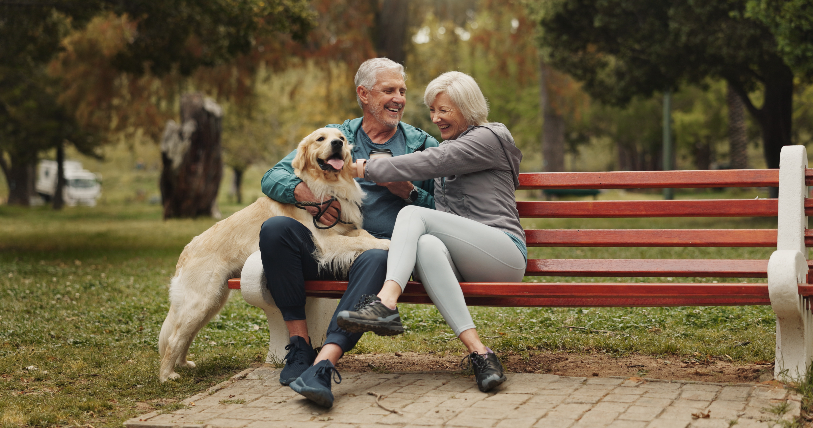

Welcome to Pawsitive Futures

Mission
At Pawsitive Futures, our mission is to give every animal the opportunity for a safe, loving, and permanent home. We are dedicated to rescuing, caring for, and rehoming pets while promoting responsible pet ownership and compassion for animals in our community. Through adoption, education, and advocacy, we strive to create brighter, pawsitive futures for pets and the families who welcome them into their lives.
Learn MoreSuccess Stories

Emma R., Adopted Oliver
"I was nervous about adopting my first dog, but Pawsitive Futures made it easy, helping me find Oliver—my little shadow who made my apartment feel like home.”

Lucy and Ray V., Adopted Maple
“The adoption process at Pawsitive Futures was thoughtful and caring, and thanks to their support, our dog Maple settled in right away and quickly claimed every couch in the house.”

Daniel K., Adopted Bella
“After moving to a new city, adopting Bella through Pawsitive Futures eased my loneliness, bringing companionship, routine, and so much happiness into my life.”
Pets Available to Adopt

Daisy
Breed: Pug
Age: 2
Daisy is full of energy and personality! She loves outdoor adventures, sniffing around the yard, and meeting new people. Daisy would do great with an active family that enjoys walks, playtime, and lots of fun. She’ll reward you with endless love and tail wags.
Learn More
Milo
Breed: Golden
Age: 2
Milo is a playful and affectionate pup who loves making new friends. Whether he’s chasing a ball in the yard or curling up beside you after a long day, Milo is happiest when he’s around people. He’s great with families and would thrive in a home where he can get plenty of exercise and attention.
Learn More
Scratches
Breed: Domestic Shorthair
Age: 1
Scratches is a gentle and affectionate cat with a soft coat and an even softer heart. He enjoys relaxing in sunny spots and spending quiet time with his favorite humans. Scratches would be happiest in a calm home where he can feel safe, loved, and spoiled with plenty of chin scratches.
Learn More
Luna
Breed: Domestic Shorthair
Age: 2
Luna is a curious and playful kitty who loves exploring new spaces and chasing toys. She has a sweet personality and enjoys cuddling once she gets comfortable. Luna would do well in a home that can give her attention, playtime, and a cozy spot by the window to watch the world go by.
Learn MoreWant to Support Us?

At Pawsitive Futures, every act of kindness helps give animals a second chance. Whether you choose to adopt, donate, volunteer your time, or share our mission with others, your support makes a real difference in the lives of pets waiting for their forever homes. Together, we can create brighter, pawsitive futures for animals in need.
Get Involved